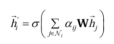
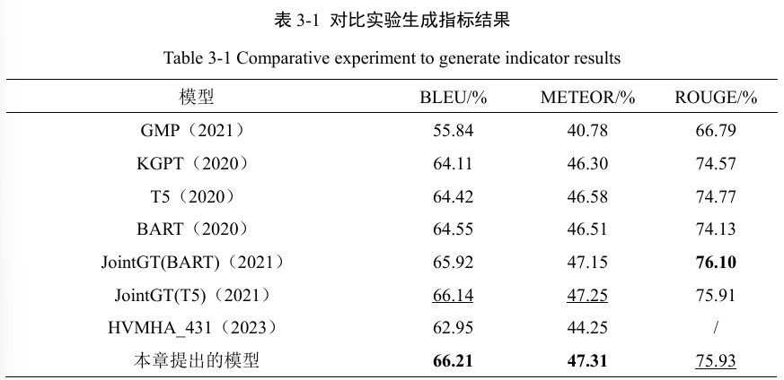
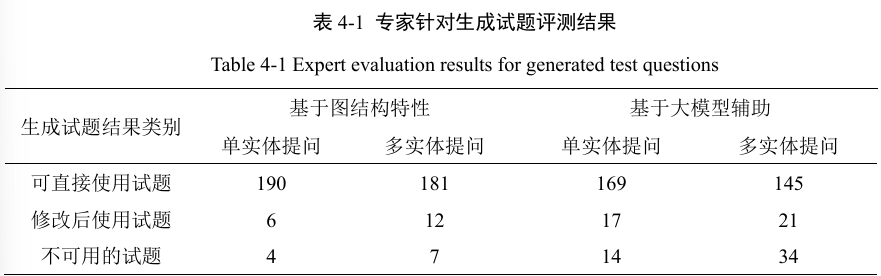

基于知识图谱的多样化习题自动生成
通用基础：基于知识图谱的文本生成
图数据->文本
知识图谱
KG=(V,R)，V是实体。一条知识用三元组表示，（es,r,eo），es是主体，eo是客体，表示关系r从es指向eo。
则KGNLG的任务是从输入知识图谱子图，生成与之语义一致的文本序列
3.2 模型架构
GAT 图注意力网络
传统做法：GNN，能更好表示输入，但计算慢；jointGT引入transformer能提升效果、减少计算成本。
GAT引入多头注意力机制，聚合邻居信息时动态分配邻居节点之间的权重，不像GNN通常赋予固定的权重。
对于节点i，对每个邻居节点计算注意力系数，再与权重参数矩阵相乘，加权更新中心节点i。

整体架构
基于编码器-解码器的T5语言模型，按照jointGT方法，基于若干个任务，学习图结构关系和文本表示。编码器部分引入GAT图注意力机制，增强表示学习和图-自然语言文本对齐能力。
模型训练
数据集：WebNLG数据；异常值、缺失值处理
levi图转换：知识图谱->新的图表示。就是把KG中的关系也变成节点，r(es→eo)变成es→r→eo。
预训练任务：目标是同时训练图encoder、序列decoder，学习图文对齐关系，即学习KG的深层语义、将语义转换为文本的能力 。
1.图重构任务：掩码部分图结构，让模型还原完整KG；学习图理解能力。
2.图文匹配任务：判断给定KG子图和文本序列是否匹配；学习图文一致理解能力。
评价指标：
1.BLEU，评估参考文本与生成文本的ngram重叠
2.METEOR，综合考虑词汇精确度、句子流畅度，对比参考与生成的相似度。
3.ROUGE，比较参考与生成文本的相似度

试题场景：基于知识图谱的试题生成
KG子图->试题-答案对(T,A)
数据：OpenKG平台数据集
创建KG：整理为图数据库支持的格式；清洗。==>三元组。写入neo4j
按涉及实体分类：
单实体提问：针对一个实体的属性、与邻居节点的关系提问。
多实体提问：多实体及其关系，更可能贴近实际
基础做法：图查询+模板组合
单实体提问
对实体的属性提问
cypher查询语言，从KG获取实体的属性。
结合模板，生成相关问题（如xx的xx是什么？），属性作为正确答案。
对于选择题，用KG中其他信息，或随机生成错误选项。
对与邻居关系的提问
cypher从KG获取关系信息。
结合模板生成问题-答案对，如xx是否为xx的xx？-是。
多实体提问
和上面一样，也是用cypher查询语句获取多实体及其关系。
结合llm做法：llm辅助生成
构造prompt
单实体提问：cypher查询语句+查询结果+引导语
多实体提问：cypher查询语句+查询结果json文件+引导语 如任务要求
这篇论文的prompt没有特别设计，只是引导语，简单说明了任务。
评估
专家评测法。

不足：事实性幻觉、知识图谱内部信息错误、与LLM自身知识冲突等
系统开发